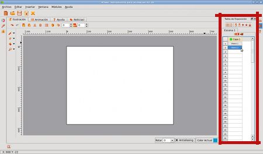
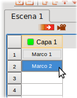
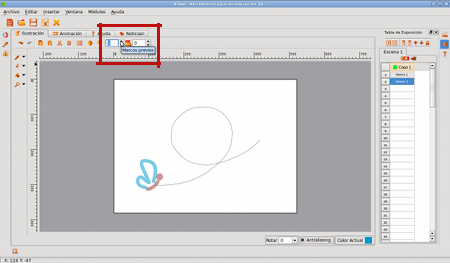
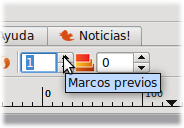
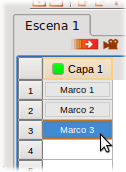
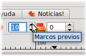
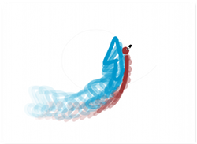
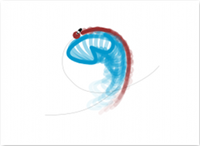
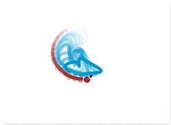
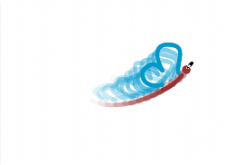

Adicionemos nuevos marcos
Con nuestro primer marco terminado, es momento adicionar el siguiente. Para ello, vamos a utilizar la Tabla de Exposición, ubicada a la derecha de nuestra área de trabajo.
Con el cursor del ratón, vamos a presionar en la posición #2 de la capa #1, como se aprecia en la imagen:
|  |  |
Fig #n. Añadiendo un nuevo marco
Cada vez que necesitemos un nuevo marco para trabajar, realizamos el mismo procedimiento. Es hora de agregar a nuestra mariposa en una nueva posición, pero antes, es momento de activar el papel cebolla un marco hacia atrás:
|  |  |
Fig #n. Activando el papel cebolla
Gracias a este recurso, vamos a poder utilizar los marcos anteriores como guía para saber en donde debemos ubicar los objetos o personajes que estemos animando. Notaste que antes de activar el papel cebolla, el marco #2 era totalmente blanco? pues bien, ahora luce como si fuera papel transparente:
Fig #n. Primer marco reflejado en el segundo, gracias al papel cebolla
Basandonos en la información del primer marco, dibujemos de nuevo la mariposa, esta vez, un poco más adelante:
Fig #n. Dibujando la mariposa en el segundo marco
Muy bien, ahora adicionamos un tercer marco, pero para darnos una mejor idea acerca de como ir dibujando nuestro personaje a medida que la animación avanza, tambien vamos a activar la visibilidad de más marcos hacia atrás (10 para este ejemplo) en nuestro cuadro de control del papel cebolla:
|  |  |
Fig #n. Agregando un marco más y 10 capas de cebolla hacia atrás
Tip: Recuerda que puedes activar la transparencia de marcos tanto hacia adelante, como hacia atrás. Eres libre de usar tantos como te guste, lo importante es que aproveches esta funcionalidad para hacer que tus animaciones se vean lo más fluidas posible.
Ahora sigamos con nuestro tercer marco, siguiendo exactamente los mismos pasos que dimos anteriormente:
Fig #n. Dibujando la mariposa en el marco #3
A este punto, es muy probable que te preguntes: Cuántos marcos va a necesitar mi animación? Bueno, es una pregunta que aprenderás a responder tú mismo, con el tiempo y con mucha mucha práctica. Sólo con la experiencia, aprenderás a calcular un valor aproximado de marcos para cada uno de tus proyectos. Por ahora, dibujaremos tantos como sean necesarios para cumplir con lo propuesto por nuestro guión:
Fig #n. Dibujando la mariposa en el marco #6
Fig #n. Dibujando la mariposa en el marco #9
|  |  |
|  |  |
Fig #n. Tomas de los marcos #21, #31, #45 y #56
Tip: Para este pequeño proyecto fue necesario dibujar 81 marcos.
Algo importante a tener en cuenta, es que no debes esperar a dibujar el último marco para poder visualizar como está quedando tu animacion. De hecho, es una buena costumbre revisar el resultado cada cierto número de marcos, para así, garantizar que las ilustraciones que estás plasmando en cada marco, realmente correspondan a lo que tienes en mente.